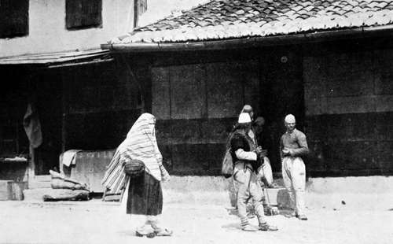
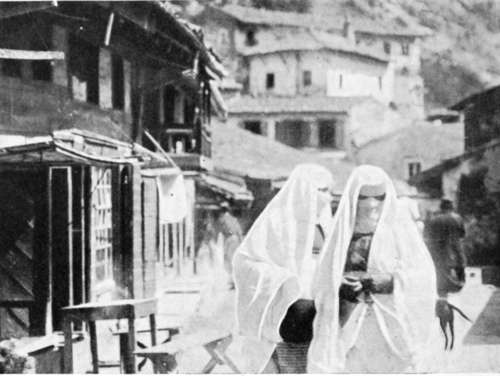
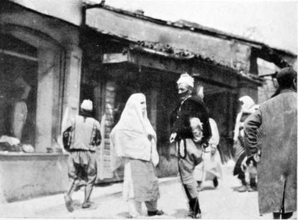
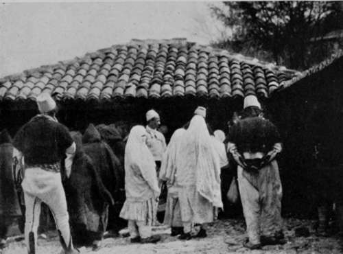
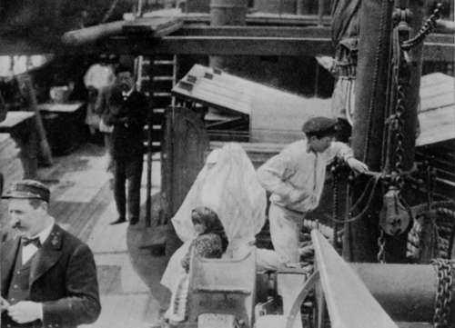

The Balkans Revisited : Montenegro. Part 2
Description
This section is from the book "Bird-Hunting Through Wild Europe", by R. B. Lodge. Also available from Amazon: Bird-Hunting Through Wild Europe.
The Balkans Revisited : Montenegro. Part 2
I begin to see now why this town appears so Turkish in character. Of course it is Turkish, or rather was so up to thirty years ago, when it was a Turkish port and part of the province of Albania.
Before then Montenegro for several centuries had possessed no port nor any coast-line. At a still earlier date its coast extended from Ragusa to the mouth of the Drin, the capital being Skodra or Scutari; but as the fortunes of war have fluctuated, so the dominions of the Prince of Montenegro have waxed or waned. But whether large or small, Montenegro has ever existed a free and independent State, owning no suzerainty to any other power.
At the collapse of the ancient Servian kingdom in the disastrous battle of Kossovo in 1389, the remnant of the conquered Serbs took refuge with their kinsfolk of Montenegro. And though at one time or another the Turks have overrun the whole of the Balkan peninsula as far as the Danube, and overthrown every other Christian kingdom, this small State, the smallest and the poorest of them all, has, through the centuries of strife and bloodshed, alone preserved her independence. Again and again have the Turkish hosts in overwhelming force surged forward to the attack, only to be repulsed, and sometimes annihilated, by the hardy and warlike men of the Black Mountain.
Albanians
When at last, after having been cut off from the sea for generations, Cattaro and its famous gulf was captured, what had been gained by the sword was lost by diplomacy. The Powers interfered, and Cattaro was handed over to Austria. Then again, when Antivari and Dulcigno were taken by the present Prince, the Treaty of Berlin restored Dulcigno to Turkey, awarding to Montenegro the Albanian towns of Gusinje and Plava.
However, the turbulent inhabitants of these places flatly refused to become part of Montenegro, and finally Dulcigno was given back, in spite of the Turkish opposition. In fact, a Turkish army was advancing to the attack for the purpose of regaining possession, when the naval demonstration of the combined fleets, led by England, off Dulcigno, led to a cessation of hostilities and confirmed the possession of Dulcigno to Montenegro. To this day the memory of Gladstone is venerated in Montenegro, and all Englishmen are treated with respect, so grateful are they for the timely service done them in their need.
I was probably the only Englishman in Montenegro, unless by chance there might have been one in Cetinje, and my fame had evidently spread far and wide. Hardly a day passed but that some queer visitor did not find his way up to my little room. Once I was accosted in very fair English by an Armenian priest who had been in England, on a begging expedition, of course. He showed me his collecting-book, in which figured the names of some of our bishops. To my great relief he didn't beg of me; to my surprise also, for I had met these priests before. In fact, one of them was a passenger in the steamer I had left quite recently, who was then actually on his way to England, and spoke of walking across Europe from Trieste to the English Channel as if it was the ordinary way of proceeding. He was rather downcast when I told him of the new Aliens Act, which would bar his landing in England unless he had a certain sum of money in his possession. He had heard nothing about it, but I thought it only fair to warn him ; it would be much better than to have it unexpectedly sprung on him without any notice.
Mohammedan Women
Street Scene
Djouraschkovitch, I heard, had become a member of Parliament, and was at Cetinje ; but my small knowledge of Italian had rendered me much more independent than I had been on my former visit to the country. My first visitor, before I had arrived a day, was a stalwart young Montenegrin, who came to offer me his services as guide and hunter as long as I should remain in Montenegro. As he had the reputation of being a great ' cacciatore,' I engaged him, and found him a first-rate fellow. The only drawback was that he knew no Italian, and I no Serb. However, I have worked under similar conditions so many times in different countries that I can generally get on without much difficulty.
Marco lived with his father and mother and brothers and sisters in a typical grey stone house on the hill-side at the back of the town.
The Montenegrin houses are very different in style from the Turkish, being gaunt and bare in the extreme-mere hollow stone blocks which look as if they had grown spontaneously from the rocks around. The shops in the bazaar and the houses in the main street are mostly Turkish, with heavy overhanging eaves and closely latticed windows, picturesque and dirty. They have the unmistakable Eastern and Mohammedan look about them, thoroughly in keeping with the mysterious figures muffled in ungainly camel-hair cloaks and huge pointed hoods which issue from them in flapping heel-less slippers and white-stockinged feet.
Whether these bundles are beautiful as houris or hideous as the witch of Endor, it is impossible even to guess. You can see nothing, not even the eyes, the whole face being covered inside the cavernous hood with a coarsely-painted canvas screen.
Even this protection against being seen by an unbeliever does not appear to satisfy their modesty, religious scruples, or whatever it is that influences them ; for they turn their backs on him in the street and show the greatest reluctance even to pass him.
To see one of these Mohammedan women travelling, especially on board a steamer, is an incongruous sight. One may be seen sometimes as a deck-passenger on the Adriatic steamers, where she looks wofully out of place, and still more so on the gangway embarking on or disembarking from a boat. She is terribly afraid of being seen, and equally afraid of falling overboard. Her baggy, shapeless clothing and ridiculous little heel-less slippers handicap her dreadfully, and her own folk take no notice of her, and never condescend to assist her in any way. If you forget her prejudices, and extend a helping hand, as I did once or twice without thinking, she won't see it, or you. As far as she is concerned you don't exist at all, and it is quite impossible to help her in any way. But if the Mohammedan woman is a more or less helpless and ridiculous object, the man, especially when seen at his prayers, is an impressive figure. One can't help realizing that his religion is very real to him-one to live for and, if necessary, to die for. At the appointed hour for prayer, wherever he may be, he goes through the long series of genuflexions and prostrations enjoined by the Koran, so perfectly absorbed in his devotions as to be oblivious to his surroundings, and it makes no difference to him whether he is in the midst of curious unbelievers, or in the circle of his own family and faith.
In The Fish-Market
Mohammedan Deck Passengers
Continue to:
- prev: XII. The Balkans Revisited : Montenegro
- Table of Contents
- next: The Balkans Revisited : Montenegro. Part 3